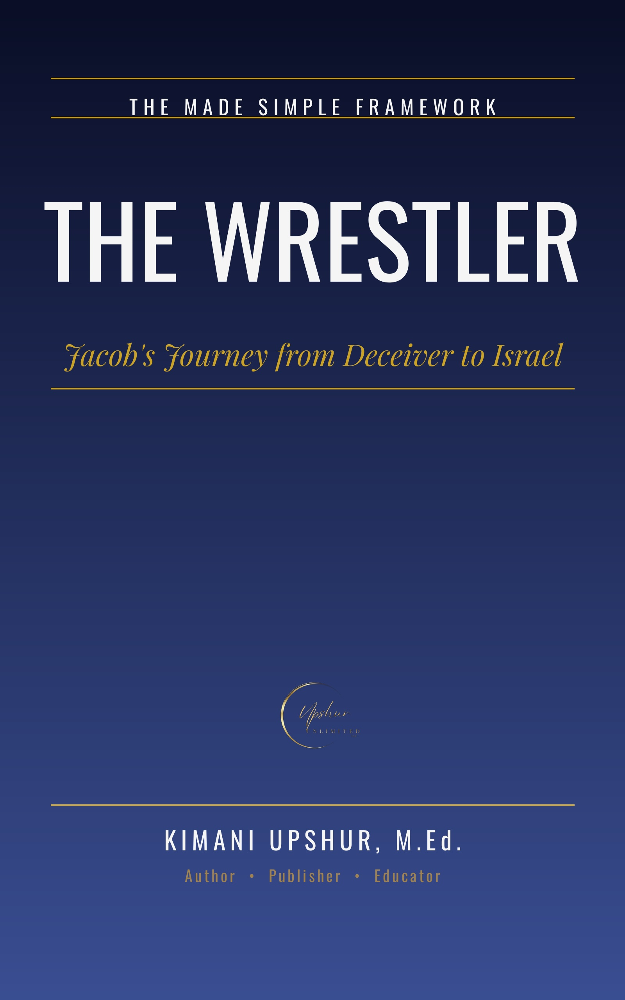

The Wrestler

He was born holding his brother's heel, and he spent the rest of his life grabbing. The birthright for a bowl of stew. The blessing in goatskins. Twenty years of wages wrestled from a cheating father-in-law. A father's love divided between his children until it tore the family apart. Jacob is the most unsettling hero in the Bible — a deceiver God chose, a cheater God blessed, a wrestler God renamed. This book follows him from the womb to the coffin, through Genesis 25 to 50, without softening a single scene and without inventing a single fact. Three words carry the whole story: Grasp. Wrestle. Become. You'll trace Jacob's lifelong reflex of taking by his own hand — heel, birthright, blessing, wages, wives, flocks, favorites — and then watch heaven come down to fight him at the Jabbok in the night that changed everything. From the fugitive's dream at Bethel to the bowed old man blessing Pharaoh, from the horror at Shechem to the bloodied robe of Joseph, from the crossed hands over Ephraim and Manasseh to the coffin waiting on a promise in Egypt, you'll see a man slowly, painfully remade — not perfected, but truly transformed. Every Scripture passage is handled with care: verified, paraphrased, and reported honestly, with the text's own silences honored instead of filled in. Honest about the grasping. Reverent about the wrestling. Real about the becoming. The Wrestler is for anyone who has ever fought with God in the night and limped into the morning blessed — and for everyone still learning that transformation is a promise, not a performance.
- Publisher
- Upshur Unlimited, LLC
- Author
- Kimani Upshur, M.Ed.
- Format
- Ebook
- Language
- English